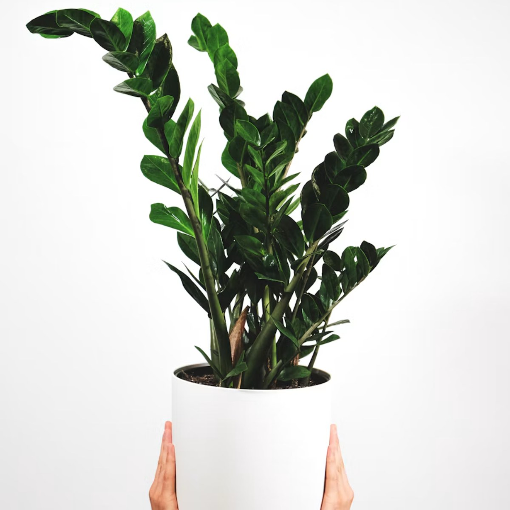
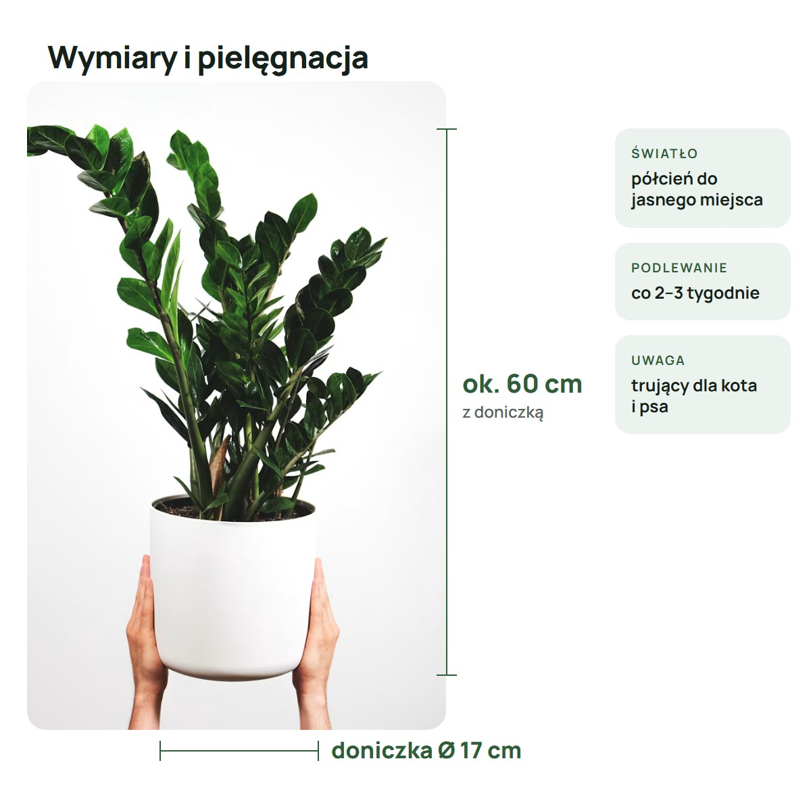
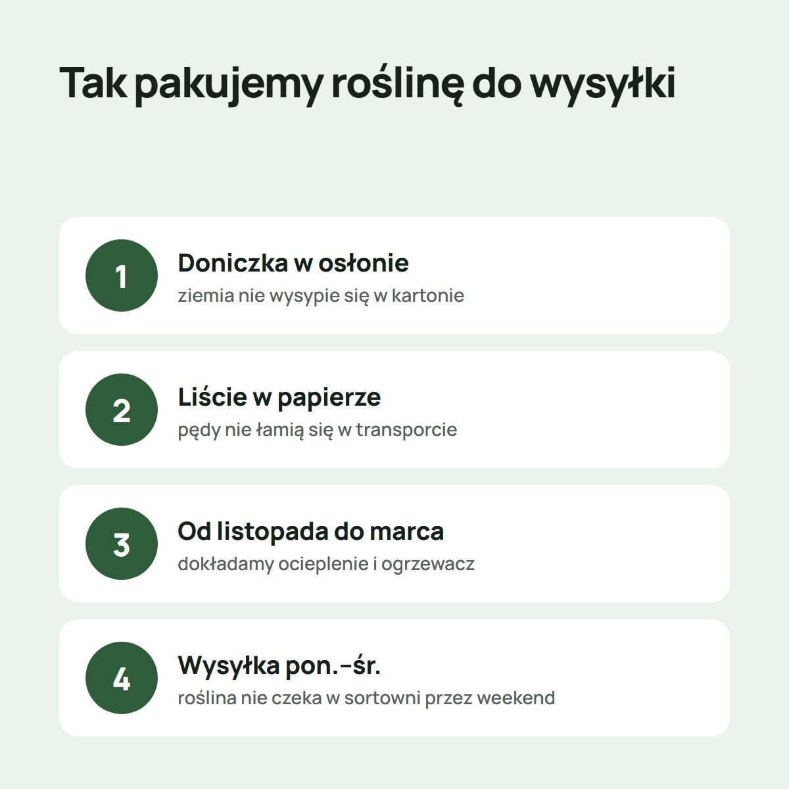

Próbka oferty Allegro · projekt koncepcyjny
Kompletna oferta dla fikcyjnego produktu – zamiokulkasa z osłonką: tytuł pod wyszukiwarkę Allegro, wypełnione parametry, opis w sekcjach „tekst + zdjęcie” i 3 zdjęcia. Opis jest też gotowy w formacie JSON do wystawienia przez API.
Produkt fikcyjny – oferta nie jest wystawiona na Allegro.



Zamiokulkas 60 cm z osłonką ceramiczną roślina doniczkowa do cienia
Tytuł: 67 z 75 znaków
168,00 zł
| Stan | Nowy |
|---|---|
| Gatunek | Zamiokulkas (Zamioculcas zamiifolia) |
| Wysokość rośliny | ok. 60 cm z doniczką |
| Średnica doniczki | 17 cm |
| Osłonka | ceramiczna, biała, w zestawie |
| Stanowisko | półcień, jasne miejsce bez ostrego słońca |
| Bezpieczna dla zwierząt | nie |
Błyszczące, ciemnozielone liście, które dobrze wyglądają także w ciemniejszym kącie mieszkania albo biura. Zamiokulkas magazynuje wodę w kłączach, więc wybacza zapomniane podlewanie i dłuższy wyjazd.
Każda roślina jest inna: liczba pędów i ich ułożenie mogą się różnić od zdjęcia.
Światło. Najlepiej półcień albo jasne miejsce bez ostrego słońca w południe. Znosi też dalszy kąt pokoju.
Podlewanie. Co 2–3 tygodnie, gdy ziemia całkiem przeschnie. Zimą rzadziej. Częściej szkodzi nadmiar wody niż jej brak.
Uwaga. Roślina jest trująca dla kotów i psów. Postaw ją poza ich zasięgiem.
Doniczkę zabezpieczamy osłoną z tektury, a liście owijamy papierem. Od listopada do marca dokładamy ocieplenie i ogrzewacz.
Rośliny nadajemy od poniedziałku do środy, żeby nie czekały w sortowni przez weekend.
Najpierw to, co kupujący wpisuje („zamiokulkas”, „60 cm”), potem cechy, które go przekonują („z osłonką”, „do cienia”). Bez wykrzykników i słów „super”, „hit”.
Po parametrach kupujący filtrują wyniki. Pusta rubryka to oferta, która wypada z filtra.
Krótkie sekcje: zdjęcie obok tekstu, nagłówki, listy. Tylko znaczniki, które przyjmuje Allegro – bez linków i danych kontaktowych.
Główne – produkt na jasnym tle, bez napisów, logo i ramek. Kolejne odpowiadają na pytania: jaki jest duży, jak o niego dbać, jak dojdzie.
Ten sam opis w dwóch formach: HTML do edytora Allegro i JSON w formacie sekcji API (przy wystawianiu przez API adresy zdjęć zamienia się na adresy zdjęć wgranych do Allegro).
Fragment JSON – sekcja 2:
{
"items": [
{
"type": "TEXT",
"content": "<h2>Co dostajesz w paczce</h2><ul><li>Zamiokulkas ok. 60 cm w doniczce 17 cm</li><li>Białą osłonkę ceramiczną, w której doniczka stoi od razu po rozpakowaniu</li><li>Kartę pielęgnacji: światło, podlewanie, przesadzanie</li></ul><p>Każda roślina jest inna: liczba pędów i ich ułożenie mogą się różnić od zdjęcia.</p>"
}
]
}